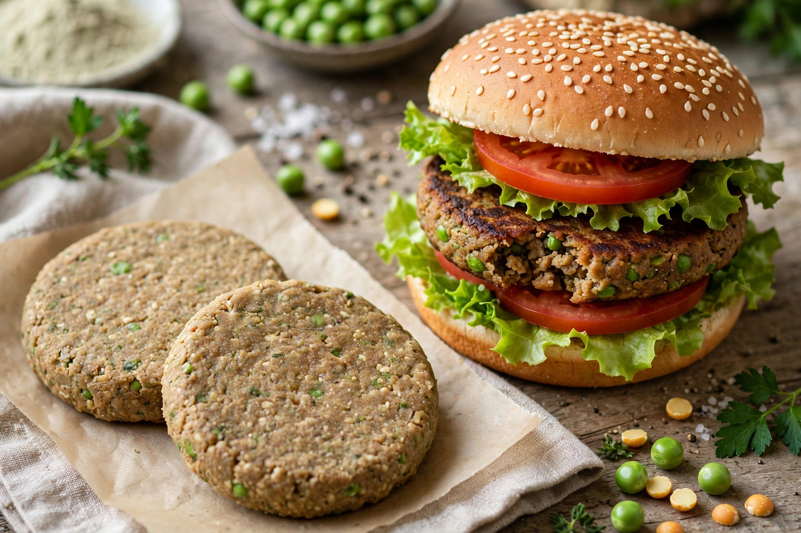

Plant-based meat, also called a meat analogue or meat substitute, is a food product made from plants designed to mimic the taste, texture and appearance of animal meat. Ingredients commonly include soy, pea protein, wheat gluten (seitan), mushrooms and legumes, with modern products using extrusion, heme compounds and coconut oil to imitate juiciness and browning.

| Type | Meat analogue |
|---|---|
| Main ingredients | Soy, pea protein, wheat gluten |
Tofu and seitan have centuries-long histories in Asia; Western analogues date to the 19th century (Kellogg's meatless products). Companies such as Beyond Meat (founded 2009) and Impossible Foods (2011) brought realistic burgers to mainstream fast food in the 2010s, followed by market contraction in the early 2020s.
Life-cycle studies generally find lower greenhouse-gas emissions, land and water use than beef, though products are often highly processed and high in sodium. Debates continue over labelling ("meat", "burger") in the EU, US and elsewhere.